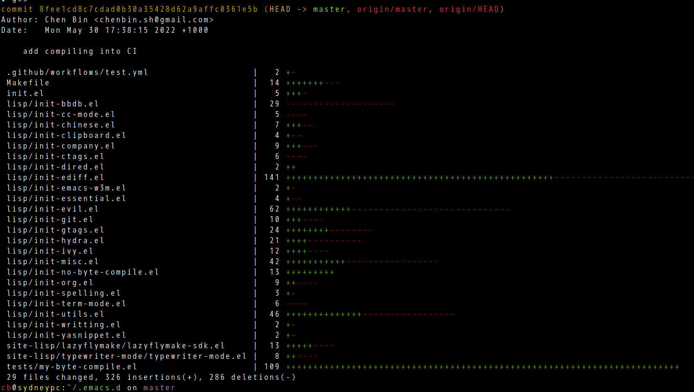
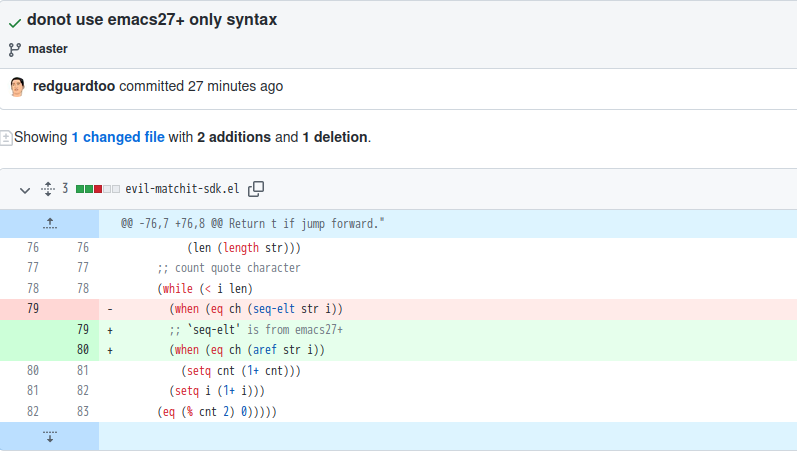

How to use EMMS effectively
First thing is to set up emms.
I could simply enable all the emms features in one line,
(with-eval-after-load 'emms (emms-all))
But above setup makes filtering tracks very slow because it's too heavy weight.
So I use below setup,
(with-eval-after-load 'emms
;; minimum setup is more robust
(emms-minimalistic)
;; `emms-info-native' supports mp3,flac and requires NO cli tools
(unless (memq 'emms-info-native emms-info-functions)
(require 'emms-info-native)
(push 'emms-info-native emms-info-functions))
;; extract track info when loading the playlist
(push 'emms-info-initialize-track emms-track-initialize-functions)
;; I also use emms to manage tv shows, so I use mplayer only
(setq emms-player-list '(emms-player-mplayer)))
Play mp3&flac in "~/Dropbox/music",
(defun my-music ()
"My music."
(interactive)
(emms-stop)
(when (bufferp emms-playlist-buffer-name)
(kill-buffer emms-playlist-buffer-name))
(emms-play-directory-tree "~/Dropbox/music")
(emms-shuffle)
(emms-next))
Sometimes I need focus on challenge programming tasks and emms should play only Mozart&Bach.
(defvar my-emms-playlist-filter-keyword "mozart|bach"
"Keyword to filter tracks in emms playlist.
Space in the keyword matches any characters.
\"|\" means OR operator in regexp.")
(defun my-strip-path (path strip-count)
"Strip PATH with STRIP-COUNT."
(let* ((i (1- (length path)))
str)
(while (and (> strip-count 0)
(> i 0))
(when (= (aref path i) ?/)
(setq strip-count (1- strip-count)))
(setq i (1- i)))
(setq str (if (= 0 strip-count) (substring path (1+ i)) path))
(replace-regexp-in-string "^/" "" str)))
(defun my-emms-track-description (track)
"Description of TRACK."
(let ((desc (emms-track-simple-description track))
(type (emms-track-type track)))
(when (eq 'file type)
(setq desc (my-strip-path desc 2)))
desc))
(defvar my-emms-track-regexp-function #'my-emms-track-regexp-internal
"Get regexp to search track.")
(defun my-emms-track-regexp-internal (keyword)
"Convert KEYWORD into regexp for matching tracks."
(let* ((re (replace-regexp-in-string "|" "\\\\|" keyword)))
(setq re (replace-regexp-in-string " +" ".*" re))))
(defun my-emms-track-match-p (track keyword)
"Test if TRACK's information match KEYWORD."
(let* ((case-fold-search t)
(regexp (funcall my-emms-track-regexp-function keyword))
s)
(or (string-match regexp (emms-track-force-description track))
(and (setq s (emms-track-get track 'info-genre)) (string-match regexp s))
(and (setq s (emms-track-get track 'info-title)) (string-match regexp s))
(and (setq s (emms-track-get track 'info-album)) (string-match regexp s))
(and (setq s (emms-track-get track 'info-composer)) (string-match regexp s))
(and (setq s (emms-track-get track 'info-artist)) (string-match regexp s)))))
(defun my-emms-show ()
"Show information of current track."
(interactive)
(let* ((emms-track-description-function (lambda (track)
(let ((composer (emms-track-get track 'info-composer))
(artist (emms-track-get track 'info-artist)))
(concat (if composer (format "%s(C) => " composer))
(if artist (format "%s(A) => " artist))
(my-emms-track-description track))))))
(emms-show)))
(defun my-emms-playlist-filter (&optional input-p)
"Filter tracks in emms playlist.
If INPUT-P is t, `my-emms-playlist-random-track-keyword' is input by user."
(interactive "P")
;; shuffle the playlist
(when input-p
(setq my-emms-playlist-filter-keyword
(read-string "Keyword to filter tracks in playlist: ")))
(with-current-buffer emms-playlist-buffer-name
(goto-char (point-min))
(let* ((case-fold-search t)
track)
(while (setq track (emms-playlist-track-at))
(cond
((my-emms-track-match-p track my-emms-playlist-filter-keyword)
(forward-line 1))
(t
(emms-playlist-mode-kill-track))))))
(emms-random)
;; show current track info
(my-emms-show))
As you can see, a little EMMS api knowledge could go a long way.
If you want to study EMMS API by practice, run M-x emms-playlist-mode-go, then M-x eval-expression RETURN (emms-playlist-track-at) to get the information of the track at point.
Here is my real world emms setup where you can see below code,
(defvar my-emms-track-regexp-function
(lambda (str)
;; can search track with Chinese information
(my-emms-track-regexp-internal (my-extended-regexp str)))
"Get regexp to search track.")
So I can use Pinyin to search track's Chinese information. I don't know any other multimedia manager can do the same thing.
Add live demo to emacs package
Emacs package developers sometimes need add live demo to her/his project.
The requirement came from my discussion with pyim's developer.
With all the linting and unit tests running for ages, he still need a quick way to test if the package actually works on Emacs 25 (and other Emacs versions). I totally agree with him because my own projects have similar problems.
A live demo built into the project is very useful for developers and testers.
Besides, a live demo could help users. They try the new package with no hassle. They don't modify their own emacs configuration to try the new package.
So I figured out a simple solution. The best part is that any packages could use this solution with minimum change if their CI script is already set up.
In a package's CI script, Emacs is running in batch mode (with "–batch" option). What I suggest is add another Makefile task runemacs which is very similar to the original CI task. But in this task, the "–batch" options is removed.
See the solution I added for find-file-in-project,
diff --git a/Makefile b/Makefile
index 9005ca4..8f7a8ae 100644
--- a/Makefile
+++ b/Makefile
@@ -1,7 +1,8 @@
SHELL = /bin/sh
EMACS ?= emacs
PROFILER =
-EMACS_BATCH_OPTS=--batch -Q -l find-file-in-project.el
+EMACS_GENERIC_OPTS=-Q -L . -L deps/ivy-0.13.4
+EMACS_BATCH_OPTS:=--batch $(EMACS_GENERIC_OPTS)
RM = @rm -rf
.PHONY: test clean test compile
@@ -18,3 +19,8 @@ compile: clean
# Run tests.
test: compile
@$(EMACS) $(EMACS_BATCH_OPTS) -l tests/ffip-tests.el
+
+runemacs:
+ @mkdir -p deps;
+ @if [ ! -f deps/ivy-0.13.4/ivy.el ]; then curl -L https://stable.melpa.org/packages/ivy-0.13.4.tar | tar x -C deps/; fi;
+ @$(EMACS) $(EMACS_GENERIC_OPTS) --load ./tests/emacs-init.el
diff --git a/tests/emacs-init.el b/tests/emacs-init.el
new file mode 100644
index 0000000..a4df068
--- /dev/null
+++ b/tests/emacs-init.el
@@ -0,0 +1,17 @@
+(require 'find-file-in-project)
+(require 'ivy)
+(ivy-mode 1)
+(setq ffip-match-path-instead-of-filename t)
+(run-with-idle-timer
+ 1
+ nil
+ (lambda ()
+ (erase-buffer)
+ (goto-char (point-min))
+ (insert
+ ";; Setup of this demo,\n"
+ "(setq ffip-match-path-instead-of-filename t)\n\n\n"
+ ";; Run \"M-x find-file-in-project-by-selected\" and input search keyword \"el\" or \"tests\".\n\n\n"
+ ";; Move cursor above below paths and run \"M-x find-file-in-project-at-point\",\n\n"
+ ";; tests/ffip-tests.el ; open file directly \n"
+ ";; find-file-in-project.el:50 ; open file and jump to line 50\n")))
Similar solution is also used in pyim, it's one liner in shell to test it in Emacs 25,
EMACS=/home/cb/what-ever-path/25.1/bin/emacs make runemacs
蒸茄盒
- 两个茄子选软且颜色深,去皮.抹盐再冲掉(为了避免表面变黑),切茄盒
- 葱姜末,料酒,肉米,全蛋,少许盐鸡精,花椒水三勺,二合一酱油20克,加淀粉适量(不用太多,2~3勺)锁住水分.搅拌制作成馅(口感类似午餐肉)
- 茄盒加入馅,摆盘后洒三分口盐(盐引出茄子的汁),大火蒸15分钟,洒红绿尖椒末,蒸一分钟
- 浇上酱油,加葱丝香菜,呲热油(速度要快)
番茄鱼片汤
- 1~2大片巴沙鱼略挤水分,切7~10毫米厚片.
- 鱼片加盐鸡精料酒抓一下,加蛋清少量土豆粉搅拌(上浆后鱼片受热表面糊化,锁住鱼片水分)
- 4~6个番茄底部十字刀,开水烫一分钟,去皮,切块,块不要太小有口感
- 葱姜下锅炸出香味,很快(10秒)小火,以免葱变焦难看.
- 番茄出汁后加水,水滚后加适量盐,味精,胡椒粉(可略多点,有辣味),12克(三勺)白醋,和西红柿综合变成果香醋
- 加鱼片盖锅焖一分钟,洒香菜和葱丝出锅
视频: 龙利鱼腌制诀窍是什么？需要注意什么？老师傅详细讲解番茄鱼片 视频备份
附录,
- 我加入了豆腐,和少量冷冻绿色蔬菜,调个色,增加营养.
Use CI to improve the quality of emacs distribution
In Better Emacs package development workflow, I proved that running Emacs compiler in CI can give huge boost to package quality.
The same workflow can apply to emacs distributions. But designing a CI workflow for the distribution is much more challenging.
For example, my .emacs.d uses about 300 packages. In CI pipeline, those packages are automatically downloaded and compiled. If compiling errors/warnings from those third party packages are not ignored, the CI will always fail.
There are also many other engineering issues. I struggled for five hours and finally got satisfying solution. Now anyone can use my solution to set up same CI pipeline in ten minutes.

Makefile is in "~/.emacs.d", it's still simple,
EMACS ?= emacs
RM = @rm -rf
EMACS_BATCH_OPTS = --batch -Q --debug-init
install: clean
@$(EMACS) $(EMACS_BATCH_OPTS) -l init.el
compile: install
@$(EMACS) $(EMACS_BATCH_OPTS) -l init.el -l tests/my-byte-compile.el 2>&1 | grep -Ev "init-(hydra|evil).el:.*Warning: docstring wider than 80 characters|an obsolete" | grep -E "[0-9]: ([Ee]rror|[Ww]arning):" && exit 1 || exit 0
You can run make compile && echo good || echo bad in shell to test the pipeline locally. Please note I use grep -v things-to-ignore to ignore some warnings. The warnings are from anonymous functions created by third packages (hydra, general.el, …).
The final missing piece is "~/.emacs.d/tests/my-byte-compile.el",
(require 'find-lisp)
(require 'scroll-bar)
(require 'ivy)
(require 'counsel)
(require 'w3m)
(require 'ibuffer)
(require 'org)
(require 'diff-mode)
(require 'cliphist)
(require 'eacl)
(require 'tramp)
(require 'dired)
(require 'shellcop)
(require 'counsel-etags)
(require 'typewriter-mode)
(require 'pomodoro)
(require 'emms)
(require 'emms-playlist-mode)
(require 'gnus)
(require 'gnus-sum)
(require 'gnus-msg)
(require 'gnus-topic)
(require 'magit)
(require 'magit-refs)
(require 'gnus-art)
(require 'git-link)
(require 'ace-window)
(require 'js2-mode)
(require 'yasnippet)
(require 'ediff)
(require 'company)
(require 'evil-nerd-commenter)
(require 'git-timemachine)
(require 'pyim)
(require 'cal-china-x)
(require 'wucuo)
(require 'langtool)
(require 'web-mode)
(require 'bbdb)
(require 'gmail2bbdb)
(require 'org-mime)
(require 'pdf-tools)
(require 'recentf)
(require 'bookmark)
(require 'find-file-in-project)
(require 'flymake)
(require 'elec-pair)
(require 'elpy)
(require 'rjsx-mode)
(require 'simple-httpd)
(require 'vc)
(require 'sdcv)
(require 'wgrep)
(require 'mybigword)
(require 'yaml-mode)
(require 'octave)
(require 'undo-fu)
(require 'wc-mode)
(require 'exec-path-from-shell)
(require 'dictionary)
(require 'company-ispell)
(require 'company-ctags)
(require 'lsp-mode)
(let ((files (find-lisp-find-files-internal
"."
(lambda (file dir)
(and (not (file-directory-p (expand-file-name file dir)))
(string-match "\\.el$" file)
(not (member file '(".dir-locals.el"
"package-quickstart.el"
"company-statistics-cache.el"
"custom-set-variables.el"
"early-init.el")))))
(lambda (dir parent)
(member dir '("lisp"))))))
(dolist (file files)
;; (message "file=%s" file)
(byte-compile-file file)))
;;; my-byte-compile.el ends here
As you can see,
- I need add lots of
requirestatement to make compiling succeed on Emacs 26, 27, 28 - Some "*.el" files generated by Emacs and 3rd party packages need be ignored
- My emacs setup code is only in "lisp" directory
That's it.
You can visit https://github.com/redguardtoo/emacs.d for a real world example.
BTW, you can find init-no-byte-compile.el where there are a few lines setup code the compiler will ignore. It's bad practice but sometimes there is no other way.
"init-no-byte-compile.el" is like,
;; -*- coding: utf-8; lexical-binding: t; -*-
;; blah blah
;; Local Variables:
;; no-byte-compile: t
;; End:
Better Emacs package development workflow
The Emacs Lisp syntax error should be automatically detected by CI (Continuous Integration).
Syntax errors could be a bit difficult to locate. For example, developers might use Emacs 28+ only APIs to develop packages running on Emacs 26.
Here is howto.
- Step 1, create a file
my-byte-compile.elin the directory "tests/",
(require 'find-lisp)
(let ((files (find-lisp-find-files-internal
"."
(lambda (file dir)
(and (not (file-directory-p (expand-file-name file dir)))
(string-match "\\.el$" file)
(not (string-match "\\.dir-locals\\.el$" file))))
(lambda (dir parent)
(not (or (member dir '("." ".." ".git" ".svn" "deps" "tests"))
(file-symlink-p (expand-file-name dir parent))))))))
(dolist (file files)
(byte-compile-file file)))
- Step 2, insert below command line into the project's Makefile,
compile:
emacs --batch -Q -L . -l my-package-main-entry.el -l tests/my-byte-compile.el 2>&1 | grep -E "([Ee]rror|[Ww]arning):" && exit 1 || exit 0
DONE! Now Gitlab/Github could use command line make compile in their CI pipeline.
Screenshot of a tricky bug of evil-matchit detected by this new workflow.

BTW, I also tried elint, but it's not as reliable as byte-compile.
Content of my-elint.el,
(require 'elint)
(let ((elint-directory-skip-re "\\(\\.dir-locals\\|ldefs-boot\\|loaddefs\\)\\.el\\'"))
(elint-directory "."))
Here is link to the Makefile from my real world project.
I use below command lines to compile and test the project locally.
EMACS=~/myemacs/26.3/bin/emacs make compile # compile only
EMACS=~/myemacs/26.3/bin/emacs make test # compile and run unit test
Configure EMMS (Emacs Multi-Media System) for Multimedia Keyboard
Emacs server need be started first.
I use emacsclient to execute emms commands in the emacs server.
Key bindings setup in ~/.i3/config for i3 window manager,
# music player client (mpc, emms ...)
bindsym XF86Search exec --no-startup-id ~/bin/music-player-client show
bindsym XF86Tools exec --no-startup-id ~/bin/music-player-client random
bindsym XF86AudioStop exec --no-startup-id ~/bin/music-player-client toggle
bindsym XF86AudioPause exec --no-startup-id ~/bin/music-player-client toggle
bindsym XF86AudioNext exec --no-startup-id ~/bin/music-player-client next
bindsym XF86AudioPrev exec --no-startup-id ~/bin/music-player-client prev
Content of ~/bin/music-player-client,
#!/bin/bash
# use mpc&mpd or emacsclient&emms to play music
if [ -z "$1" ]; then
echo "Usage: music-player-client pre|next|toggle|random|show"
exit 1
fi
# Please uninstall mpc&mpd if using emms
if command -v mpc &> /dev/null; then
case $1 in
prev )
mpc prev
;;
next )
mpc next
;;
toggle )
mpc toggle
;;
esac
elif command -v emacsclient &> /dev/null; then
case $1 in
prev )
emacsclient --eval '(emms-previous)'
;;
next )
emacsclient --eval '(emms-next)'
;;
toggle )
emacsclient --eval '(emms-pause)'
;;
random )
emacsclient --eval '(progn (emms-shuffle) (emms-next))'
;;
show )
# program like dunst can show the notification
notify-send "$(emacsclient --eval '(file-name-base (emms-show))')"
;;
esac
fi
I usually run M-x emms-play-directory-tree to play music. My emms setup,
(with-eval-after-load 'emms
;; minimum setup is more robust
(emms-minimalistic)
(setq emms-player-list '(emms-player-mplayer
emms-player-vlc)))
Screen shot of running ~/bin/music-player-client show,

Integrate delta into git
Delta is a syntax-highlighting pager for git, diff, and grep output.
Set up is as simple as copying its sample setup.
I wrote a shell script my-pager which can use both less and delta as pager,
#!/bin/bash
# @see https://stackoverflow.com/questions/19408649/pipe-input-into-a-script
if [ -x "$HOME/.cargo/bin/delta" ]; then
cat | $HOME/.cargo/bin/delta "$@"
else
cat | less -F -X
fi
Here is my extra delta setup in ~/.gitconfig (Delta reads settings from ~/.gitconfig),
[core]
pager = ~/bin/my-pager
[interactive]
diffFilter = ~/bin/my-pager --color-only
[merge]
conflictstyle = diff3
[diff]
colorMoved = default
[delta "default"]
file-decoration-style= blue box
hunk-header-decoration-style = purple ol
[delta]
features = default
navigate = true # use n and N to move between diff sections
Screenshot,

Emacs 28.1 on Debian Linux
As a happy Emacs 27 user on Debian Linux, I plan to use both Emacs 28.1 and Emacs 27 and gradually migrate from Emacs 27 to Emacs 28.
So I installed Emacs 28.1 without X Window System Support (emacs-nox) and it only runs in daemon mode.
Here are the steps,
- Compare PKGBUILD of emacs-nox 27 and PKGBUILD of emacs-nativecomp 28 to get the difference of build script (I was more familiar with Arch Linux. You can use Gentoo Linux's website to collect information)
- The only missing third party package is
libgccjit. Runsudo apt install libgccjit-12-devto install it - Download Emacs 28.1 source code, run below command in shell,
cd ~/Downloads/emacs-28.1 && mkdir -p ~/myemacs/28.1 && rm -rf ~/myemacs/28.1/* && ./configure CFLAGS=-no-pie --prefix=~/myemacs/28.1 --without-x --without-sound --with-modules --with-native-compilation --without-compress-install && make && make install
- After installation, run "~/myemacs/28.1/bin/emacs" and Emacs will compile the packages automatically (I watched a few youtube videos until the compilation finished)
- Create "~/.config/systemd/user/emacs.service" with below content ("/home/cb" is my HOME directory),
[Unit]
Description=Emacs text editor
Documentation=info:emacs man:emacs(1) https://gnu.org/software/emacs/
[Service]
Type=forking
ExecStart=/home/cb/myemacs/28.1/bin/emacs -Q --daemon -l "/home/cb/.emacs.d/init.el" --eval "(progn (require 'server) (server-start))"
ExecStop=emacsclient --eval "(kill-emacs)"
Environment=SSH_AUTH_SOCK=%t/keyring/ssh
Restart=on-failure
[Install]
WantedBy=default.target
- Run
systemctl --user restart emacs.servicein shell - Done! Run
emacsclientto enjoy Emacs 28.1.
2.1. disable "idle loader" in server mode
I use "idle loader" in my Emacs distribution. Obviously it need be disabled in server mode.
Here is the code,
(defvar my-disable-idle-timer (daemonp)
"If not nil, Function passed to `my-run-with-idle-timer' is run immediately.")
(defun my-run-with-idle-timer (seconds func)
"After SECONDS, run function FUNC once."
(cond
(my-disable-idle-timer
(funcall func))
(t
(run-with-idle-timer seconds nil func))))
2.2. Shell script to install Emacs
You could Use below script "install-emacs.sh" to install Emacs,
#!/bin/sh
[ -z "$EMACS_VERSION" ] && echo "Usage: EMACS_VERSION=25.1 install-emacs.sh or EMACS_VERSION=snapshot install-emacs.sh" && exit 1
[ -z "$EMACS_URL" ] && EMACS_URL="http://mirror.aarnet.edu.au/pub/gnu/emacs/"
# I've assign 12G memory to /tmp as ramdisk
[ -z "$EMACS_TMP" ] && EMACS_TMP="/tmp"
if [ "$EMACS_VERSION" != "snapshot" ]; then
echo "curl $EMACS_URL/emacs-$EMACS_VERSION.tar.gz"
curl $EMACS_URL/emacs-$EMACS_VERSION.tar.gz | tar xvz -C $EMACS_TMP
fi
# @see http://wiki.gentoo.org/wiki/Project:Emacs/GNU_Emacs_developer_guide
# @see http://packages.gentoo.org/package/app-editors/emacs for info on Gentoo Linux
# --without-gtk and --without-gtk3 is optional
echo "Installing Emacs ..."
if [ "$EMACS_VERSION" = "snapshot" ]; then
cd $HOME/projs/emacs && mkdir -p $HOME/myemacs/snapshot && rm -rf $HOME/myemacs/snapshot/* && ./autogen.sh && ./configure CFLAGS=-no-pie --prefix=$HOME/myemacs/snapshot --without-x --without-dbus --without-sound --with-gnutls=no && make && make install
echo "Emacs snapshot was installed!"
elif [ "$EMACS_VERSION" = "28.1" ]; then
cd $EMACS_TMP/emacs-$EMACS_VERSION && mkdir -p $HOME/myemacs/$EMACS_VERSION && rm -rf $HOME/myemacs/$EMACS_VERSION/* && ./configure CFLAGS=-no-pie --prefix=$HOME/myemacs/$EMACS_VERSION --without-x --without-sound --with-modules --with-native-compilation --without-compress-install && make && make install
else
cd $EMACS_TMP/emacs-$EMACS_VERSION && mkdir -p $HOME/myemacs/$EMACS_VERSION && rm -rf $HOME/myemacs/$EMACS_VERSION/* && ./configure CFLAGS=-no-pie --prefix=$HOME/myemacs/$EMACS_VERSION --without-x --without-sound --with-modules && make && make install
rm -rf $EMACS_TMP/emacs-$EMACS_VERSION
echo "Emacs $EMACS_VERSION was installed!"
fi
Start teamviewer on i3wm
See yveslec's analysis.
So the solution is just one liner in shell.
ssh -X 127.0.0.1 "DISPLAY=:0.0 teamviewer"
Here is my shell script "~/bin/sshx-teamviewer.sh" with a bit optimization,
#!/bin/sh
# Run "cat ~/.ssh/id_rsa.pubkey >> ~/.ssh/authorized_keys" to
# avoid inputting ssh login password
ssh -X -C 127.0.0.1 "DISPLAY=:0.0 teamviewer"